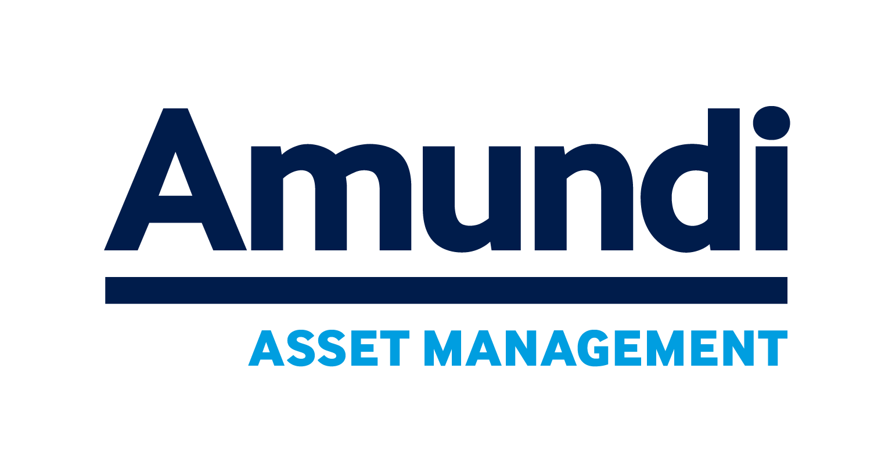
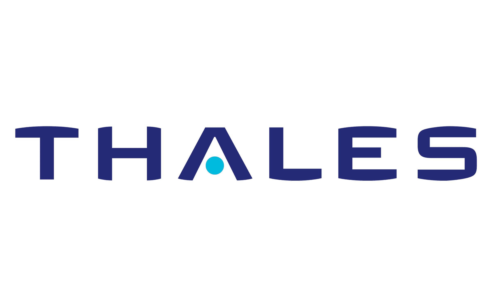
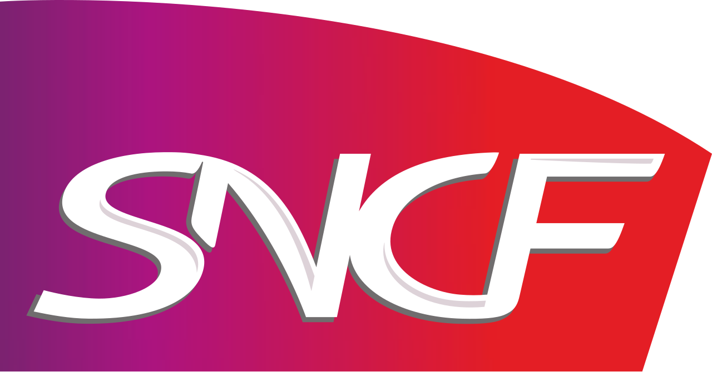
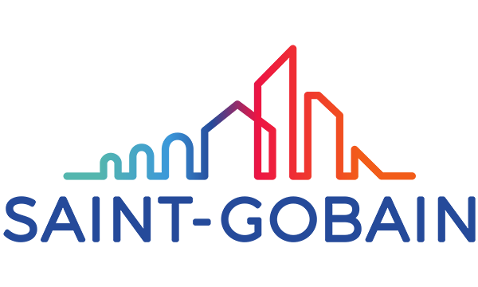
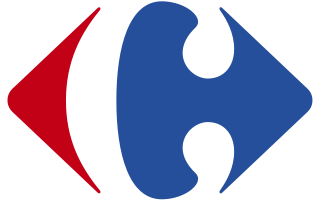
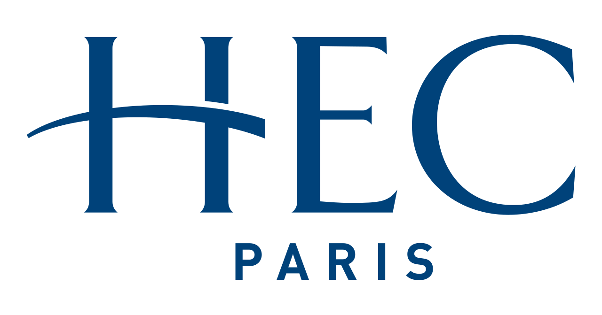
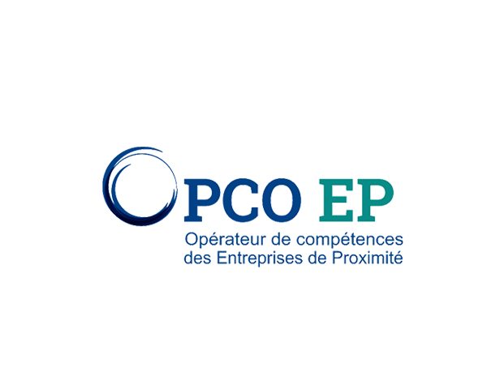

Banque & Assurance
Portefeuille de 30 cas d'usage IA priorisés
×3,5
de ROI sur les 6 premiers cas d'usage mis en production en moins d'un an.
Comme le Titan porte le monde, Atlas soutient les organisations exigeantes dans leur passage à l'intelligence artificielle — de la stratégie aux agents en production, avec méthode et conformité.
De la vision à l'industrialisation : nous orchestrons votre transformation IA de bout en bout — gouvernance, portefeuille de cas d'usage, montée en compétence des équipes et passage à l'échelle.
Découvrir l'offre →Vision, feuille de route, portefeuille de cas d'usage priorisés et modèle opérationnel (IA Operating Model).
En savoir plus →Diagnostic de maturité, data readiness, évaluation des modèles, risques, biais et conformité AI Act / RGPD.
En savoir plus →Agents IA, copilotes, RAG et orchestration multi-agents. De la preuve de valeur au LLMOps en production.
En savoir plus →Process mining, refonte des flux et augmentation des équipes par l'IA — productivité et qualité mesurées.
En savoir plus →Comprendre l'enjeu métier, qualifier les cas d'usage IA, fixer la cible de valeur et les garde-fous.
Prouver la valeur vite : POC sur données réelles, évaluation rigoureuse, décision go / no-go factuelle.
Passer en production : MLOps / LLMOps, sécurité, conformité AI Act, monitoring et qualité continue.
Diffuser les usages, mesurer l'impact, former les équipes et transmettre l'autonomie.







de ROI sur les 6 premiers cas d'usage mis en production en moins d'un an.
de temps de traitement grâce à un copilote RAG branché sur la base documentaire.
des systèmes IA cartographiés, classés par risque et documentés en 4 mois.
Non. Nous commençons par les cas d'usage à plus forte valeur et faisons monter la donnée au rythme des besoins. Une stratégie « big bang » data avant toute IA est souvent un facteur d'échec ; nous privilégions des boucles courtes qui prouvent la valeur et financent la suite.
Non, Atlas est strictement indépendant. Nous travaillons aussi bien avec les modèles propriétaires (Anthropic Claude, OpenAI, Mistral…) qu'open-weight et auto-hébergés. Le choix se fait sur vos contraintes de souveraineté, de coût et de performance — jamais sur une commission.
La conformité est intégrée dès le cadrage, pas ajoutée à la fin. Nous classons chaque système par niveau de risque au sens de l'AI Act, documentons les modèles, encadrons les données personnelles et mettons en place la gouvernance et le monitoring nécessaires à une IA digne de confiance.
Un premier prototype évaluable en 4 à 6 semaines, un cas d'usage en production en 2 à 4 mois selon la complexité et l'accès aux données. Chaque jalon est mesurable : nous décidons d'industrialiser sur des preuves, pas sur des promesses.
Parlons de votre prochaine étape — un échange de 30 minutes pour cadrer votre enjeu et identifier vos premiers cas d'usage IA.